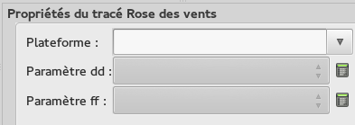

Configurer un tracé RDV

Plateforme :
le menu déroulant de sélection de la plateforme propose un mode de sélection avancé. Pour cela, entrer la ou les premières lettres de la plateforme pour n'avoir que les plateformes correspondantes proposées, comme l'illustre l'image ci-dessous :
Paramètre dd
Paramètre ff :
le menu déroulant de sélection d'un paramètre se présente en cascade à 3 niveaux :
Noter : lorsque la liste des paramètres est très longue, on peut utiliser les touches de défilement des pages pour facilter la recherche.

Calculette :  cf § Opération sur les données.
cf § Opération sur les données.